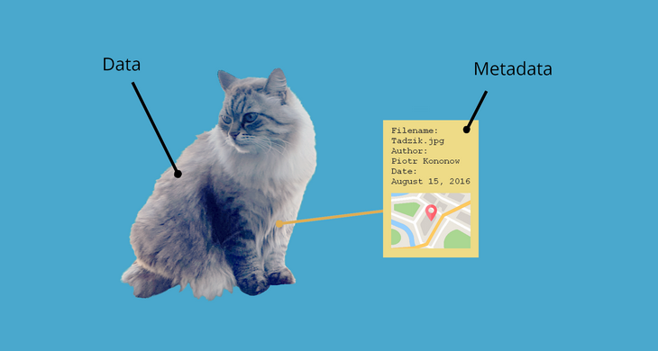

Metadata
Metadata is data about data: in a broad sense, metadata is all the information that you provide about your project, dataset, variables, code, etc. Read some nice examples here. Providing metadata is incredibly important, since metadata makes data:
- Findable
- Readable
- Interpretable
- Manageable
Without metadata, a lot of data are just numbers that cannot be interpreted.

Example research metadata
- A project readme containing the information below. Often in a
readme.txt. Find an example template here or use the information below: - Creator (PI): name and affiliation of PI
- Title: project title
- Funding sources: names of funders, incl. grant numbers and related acknowledgements
- Data collector/producer: who is responsible for data collection + date and location of data production
- Description: project description, incl. relevant publications
- Sample and sampling procedures: target population and methods to sample it (or link to document describing this), retention rates for longitudinal studies
- Coverage: topics, time period and location covered
- Source: if relevant, citations to original source from which data were obtained
- Metadata for a specific data file, containing, for example, file description, data format, relationship with other files, date of creation and versioning information, etc. This can be a
readme.txtor other filetypes, such asnameofdatafile.jsonornameofdatafile.xml - A codebook (data dictionary), which specifies what all variables in your dataset mean. See the codebook chapter for more information.
- Question wording or meaning
- Variable text: question text or item number
- Respondent: who was asked the question?
- Meaning of codes: interpretation of the codes assigned to each variable
- Missing data codes, e.g.,
999 - Summary statistics for both valid and missing cases
- Imputation and editing: identify data that have been estimated or extensively edited
- Constructed and weight variables: how were they constructed
- Location in the data file: field or column location, if relevant
- Variable groupings: if you categorize variables into conceptual groupings
- Metadata in systems, such as a data repository. This type of metadata is often enforced and interoperable so that you don't have to manually create this type of metadata.
Interoperable metadata
Metadata standards
Metadata standards are frameworks for metadata fields. They describe how metadata fields should be formatted, so that they will become machine-readable and therefore interoperable. An enormous amount of metadata standards is available which all differ per discipline, but the best known metadata standards for the social sciences are:
- Dublin Core: this is a set of basic elements to describe a wide range of networked resources, among which Title, Creator, Subject, Description, Publisher, Contributor, Date, Type, Format, Identifier, etc. (see readme information above). Note this Dublin Core metadata file generator to see the elements.
- Data Documentation Initiative (DDI) is a standard often used in the social, behavioral, economic, and health sciences. It knows several sub-profiles that are based on DDI, but may be more extensive. One of those is CESSDA (Consortium of European Social Science Data Archives). CESSDA's metadata model can be found here
As an individual researcher, you are often not directly confronted with these standards. It is just good to know that different repositories can use different standards. See more standards here.
Controlled vocabularies
Where metadata standards tell us what to call the metadata fields, controlled vocabularies come in handy when we have to fill in those fields. Using controlled vocabularies enables machines to identify identical values, instead of everyone using a different term for the same thing.
Whereas some fields have very extensive controlled vocabularies, psychology does not have many. A few links:
- Controlled vocabularies from the DDI
- CESSDA vocabularies (large overlap with DDI)
- ELSST – European Language Social Science Thesaurus